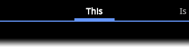
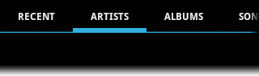

Introduction
Paging indicator widgets compatible with the ViewPager from the Android Compatibility Library and ActionBarSherlock. Originally based on Patrik Åkerfeldt's ViewFlow.
When using the ViewPager widget it is not always obvious to the user that there are adjacent views they can navigate to. By implementing this widget you provide a clear indicator that there exists additional content which they can click or swipe to see.
At present there are three styles of indicators which can be used:
Title IndicatorDisplays the title of the selected page in the center with the titles of the adjacent pages (if available) in a more subtle style. |
 |
Tab IndicatorSimilar to the title indicator but displays as many titles as possible in scrolling and animated horizontal tabs. |
 |
Circle IndicatorSimple indication of the number of pages available in the pager with a separate drawing style for the currently selected page. |

Download
Version 2.2.2 — 2011-12-31
Change Log
- New
setTypeface(Typeface)andgetTypeface()methods for title indicator. (Thanks Dimitri Fedorov) - Added styled tab indicator sample.
- Support for widths other than those that could me measured exactly.
- Fix incorrect
R.javaimports in all of the sample activities.
Looking for an older version? Check here.
Try out the sample application: 
Usage
-
Include one of the widgets in your view. This should usually be placed adjacent to the
ViewPagerit represents.<com.viewpagerindicator.TitlePageIndicator android:id="@+id/titles" android:layout_height="wrap_content" android:layout_width="fill_parent" />
-
In your
onCreatemethod (oronCreateViewfor a fragment), bind the indicator to theViewPager.//Set the pager with an adapter ViewPager pager = (ViewPager)findViewById(R.id.pager); pager.setAdapter(new TestAdapter(getSupportFragmentManager())); //Bind the title indicator to the adapter TitlePageIndicator titleIndicator = (TitlePageIndicator)findViewById(R.id.titles); titleIndicator.setViewPager(pager);
Note: If you are usingTitlePageIndicatoryour adapter must implementTitleProvider. -
(Optional) If you use an OnPageChangeListener with your view pager you should set it in the indicator rather than on the pager directly.
//continued from above titleIndicator.setOnPageChangeListener(mPageChangeListener);
For more examples please take a look at the source code to the samples.


Implementations
Beautiful Widgets
Beautiful set of Widgets containing clock widget, clock and weather widget, weather widgets, date widgets and toggle widgets with skins/themes support! Now with more widgets and layouts!
FriendCaster
FriendCaster for Facebook gives you the best Facebook experience on Android devices!
SeriesGuide
Manage the progress of (re-)watching your favorite TV shows. Keep track of which episodes you still have to watch or which ones are upcoming.
Ride Metra
Ride Metra is an easy to use and beautiful transit app that provides Metra train schedules, station locations and directions, nearby stations, upcoming departures, Metra service advisory alerts and the ability to search for a Metra rail line or station.
Traktoid
Traktoid, a trakt client.
RateBeer for Android
Mobile interface to the world's largest source for information on craft beer: RateBeer.
Astronomy Picture of the Day
Get the latest pictures from NASA's Astronomy Picture of the Day (APOD) and set them as your homescreen wallpaper.
Is your app missing?
Contact Jake Wharton or fork the project, update this page, and send a pull request!
Hint: It's in the gh-pages branch.
Credits
© 2011 Jake Wharton — @JakeWharton · +JakeWharton
Developed and distributed under the Apache License, Version 2.0.
Originally based on widgets developed by Patrik Åkerfeldt.